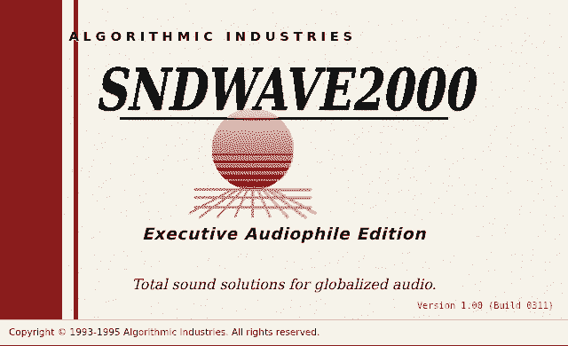
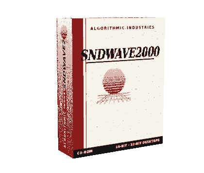
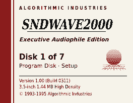
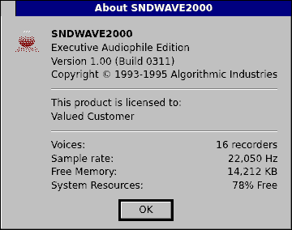

SNDWAVE2000 · Executive Audiophile Edition
Sixteen Sound Recorders, one instrument
Total sound solutions for globalized audio.
An instrument for your DAW made of sixteen real Windows 3.11 Sound Recorders. It runs Windows for Workgroups 3.11 inside the plugin, opens sixteen copies of Sound Recorder, and plays your notes on them. Every sound is built with Sound Recorder's own menu commands; the plugin never makes a sound of its own.
Demonstration
Everything on this page was recorded from the plugin. These are screen captures, every Windows pixel shown as whole device pixels, with the sound the plugin made.
Loading. Windows for Workgroups 3.11 resumes, its sixteen Sound Recorders lose their title bars and line up, and the first preset plays.
The captures were made with 1.2.1, released as BASILISK 16; the instrument is the same, under its new name.
Features
A sound is a DNA, one line of text: layers of Sound Recorder commands, then settings. chimesE+;R900 is CHIMES.WAV with Add Echo and Increase Volume, and a 900 ms release. Type one into the editor, pick a preset, or click the Effects buttons.
Layers
Up to 8 layers per sound, each on its own recorders, with its own start offset, pan, level, transpose, harmony and unison. One note can sound up to 16 recorders.
Four macros
Automatable from the DAW. The DNA says what each one moves: a layer's level, pan, offset, transpose, unison spread, envelope speed or echo count. The mod wheel adds to Macro 1.
Envelopes on a real Windows graph
Each layer can have drawn volume and pan envelopes of up to 8 points. A seventeenth Sound Recorder draws the selected envelope in its green wave view.
Keyboard, Mod and Bend
Five octaves of Windows push-button keys, Bend and Mod scroll bars, and Hold. Turn on Keys to play from the computer keyboard. Incoming MIDI holds the keys down and moves the wheels.
Sound you can watch being built
A new sound is built in front of you with Sound Recorder's own menus: Increase Speed, Add Echo, Reverse, Insert File, Mix with File, Copy and Paste. The recorder's row lights up and its status line names each command as it runs.
The library disc
510 public-domain and CC0 sounds (pianos, bells, choirs, bowls, birds, weather, machines) on a drive of their own, used by name: marimba_c4E#16. Collages mix and insert them at any time in a sound: ding@t200Mthunder_rumble.
Presets everywhere
76 programs, in your DAW's preset list and in a Preset drop-down inside Windows. Saving a preset saves its DNA, so a sound copied from this site pastes straight into the editor.
Batch rendering
render311 renders a DNA plus a MIDI file to a WAV through the real machine, faster than real time and bit-identical on Windows, macOS and Linux. The preset demos were made with it, except the six macro presets, which were rendered by the VST3 in a test host with Macro 1 automated.
Windows Help, the old way
A help file for Windows 3.11's own help viewer, WINHELP.EXE: a contents page, Search, glossary popups, the strips and panels explained, and a full DNA reference. It is compiled from plain text by a small WinHelp compiler written for this project, without Microsoft's tools. These are screenshots of it in the real Windows 3.11 viewer, taken while the instrument was still called BASILISK 16. It is written and tested, and ships in a coming release.

Sound packs
Version 1.3.0 brings a library of 1,360 presets on 25 sound-pack discs, each from an independent publisher: a Reston multimedia house, a Bielefeld studio-equipment maker, a Hsinchu electronics firm, a London garage label turned limited company. Every disc has its box, its manual and its Windows help file. The Sound Pack Explorer has them all, with a preview of every preset and its recipe.


Hear every preset
Each preset plays a short phrase of the kind it is made for: pads play slow chords, basses a bassline, plucks an arpeggio, bells a melody. The phrases are MIDI, rendered through the real plugin, then only levelled to the same loudness. Presets that sound wrong are marked, not hidden. Under each name is its recipe: the DNA in Sound Recorder's words, on one line when it fits, else a line per layer. Copy DNA copies the exact string.
| 3.11 originals | The instrument's own: Windows 3.11's CHIMES, DING, RINGIN and RINGOUT, sped up, slowed, reversed, echoed, stacked and spliced. |
| Library disc | Layered instruments built from the library disc's sounds: Glass Piano, Bowl Swell, Cello Breath, Kalimba Train and more. |
| Factory | The factory presets. Many use Windows XP's sounds, which the instrument carries in C:\XPSOUNDS. |
No demos here yet.
How it works: what is original, what is ours
The sound of a preset is made by Windows' own programs from Windows' own files. What we added plays those sounds as notes and shapes them.
3.11Original: the program and its commands
Every DNA step is one of Sound Recorder's own menu commands, run by the real Sound Recorder (SOUNDREC.EXE) in its own process, on its own buffer:
- Increase / Decrease Volume, Increase / Decrease Speed
- Add Echo (Sound Recorder's real echo) and Reverse
- Delete Before / After Current Position
- Copy, Paste Insert, Paste Mix
- Insert File and Mix with File
Our program in Windows only picks the menu items and moves the position slider; it never edits the samples.
3.113.1XPOriginal: the sounds
The Windows sounds are files from the Windows installs themselves:
- CHIMES, DING, RINGIN and RINGOUT from Windows for Workgroups 3.11, plus CHORD and TADA from Windows 3.1 (3.11's disks had dropped them).
- Windows XP's 35 sounds, converted to PCM that Sound Recorder 3.1 opens, in C:\XPSOUNDS. One name means one file:
dingis the 3.x recording,ding-xpXP's.
CC0 PD The library disc is added material: CC0 and public-domain recordings, each credited on the disc (hover a badge in the preset list). They are converted to 22050 Hz 16-bit mono so Sound Recorder 3.1 can open them.
Ours: playing notes
- The voice allocator: which recorder plays which note
- Note pitch, transpose, harmony and unison voices, velocity, pitch bend
- Layer levels, pan and start offsets, the ADSR and drawn envelopes
- The four macros and the mod wheel
- The assembled screen: our program in Windows strips the real recorders of their menus and title bars, lines them up, and adds panels and a keyboard built from Windows' own controls
How a note is played
Our program presses the recorder's own Rewind and Play. Sound Recorder plays its own buffer through the normal Windows sound calls. We added a 32-voice sound card to the emulator, and a Windows 3.11 driver for it; the card sets each voice's rate (the pitch, with 4-point Hermite interpolation), volume, pan and envelope.
The emulator is DOSBox Pure, with our sound card added. The plugin never makes a sound of its own. It delays the emulated machine's output by a fixed, reported latency, resamples it to your session's rate, and applies Output Gain.
Try it online

The instrument runs in your browser: the plugin's own engine, compiled for the web, with the same Windows for Workgroups 3.11 and the same sixteen Sound Recorders. It resumes from the moment the synth finished assembling, so it is ready as soon as it has loaded, about 5 MB. Play it with the on-screen keys, the computer keyboard or Web MIDI.
Best on a desktop or laptop computer: it needs a mouse, a keyboard and a fast processor.
Download
SNDWAVE2000 is a sixteen-voice synthesizer built from real Sound Recorders. The download is complete: the plugin, Windows 3.11 and its Sound Recorders, the library disc and the batch renderer, with nothing else to install or find. The current release is 1.2.1, released as BASILISK 16: it installs as Basilisk16.vst3 and appears in your DAW as BASILISK 16. The first release under the SNDWAVE2000 name will be 1.3.0, with the sound packs.

1.2.1, released as BASILISK 16. Checksums, the patched DOSBox Pure source and the batch renderer are on the release page. Source: packages/basilisk-synth-311.
Install
- Windows
- Unzip and copy the Basilisk16.vst3 folder to
C:\Program Files\Common Files\VST3, then rescan plugins in your DAW. It is not code-signed (there is no signing identity); DAWs load it like any other unsigned plugin. - macOS
- Unzip. Copy Basilisk16.vst3 to
~/Library/Audio/Plug-Ins/VST3and Basilisk16.component to~/Library/Audio/Plug-Ins/Components. It is ad-hoc signed but not notarized (no Apple developer identity), so run this once in Terminal, then restart the DAW:xattr -dr com.apple.quarantine ~/Library/Audio/Plug-Ins/VST3/Basilisk16.vst3 ~/Library/Audio/Plug-Ins/Components/Basilisk16.component
Good to know
No account and no API key. The 76 programs are in your DAW's preset list and in Windows' Preset drop-down, and you can also type a DNA straight into Windows. A new sound is built while the old one keeps playing: Windows rebuilds one recorder at a time and plays your notes in between, so a preset change never interrupts you. Offline renders wait for the build and come out bit-identical every time, including after reloading the project; live playback never waits (it is silent for the few seconds Windows takes to assemble). It reports a fixed latency of 60 ms, which DAWs compensate for on playback; you hear it when you play live. Each instance is an emulated PC that rests when it has nothing to do: about 13% of one core idle and 35% while playing, on the PC it was built on. Sixteen voices per instance; a seventeenth note steals the oldest.
Credits and licences
Windows for Workgroups 3.11, Windows 3.1 and Windows XP, their sounds, and Sound Recorder are © 1985–2001 Microsoft Corporation. The Windows images came from Windows for Workgroups 3.11 and Windows XP Professional SP3 as preserved by the Internet Archive.
The library disc's sounds are public domain and CC0; each one's source and licence is listed on the disc (\LIBRARY.TSV) and in packages/basilisk-synth/library.
The emulator is DOSBox Pure (GPLv2 or later), with one addition: BSYN, an emulated 32-voice sound card, because Windows 3.11's Sound Blaster driver can only play one sound at a time. The plugin is built with DPF.
The site and the box are set in DejaVu Serif and DejaVu Sans (free licence).

